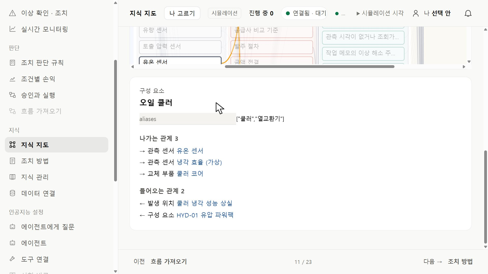
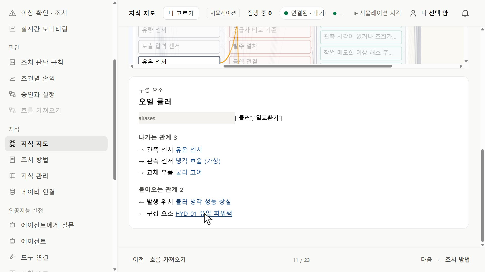
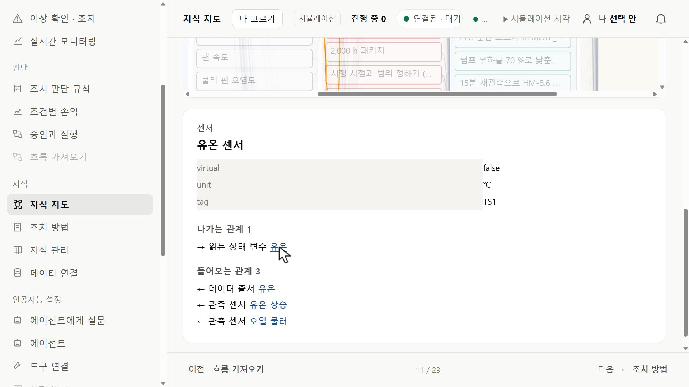
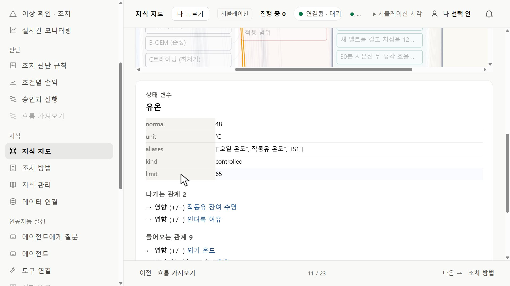
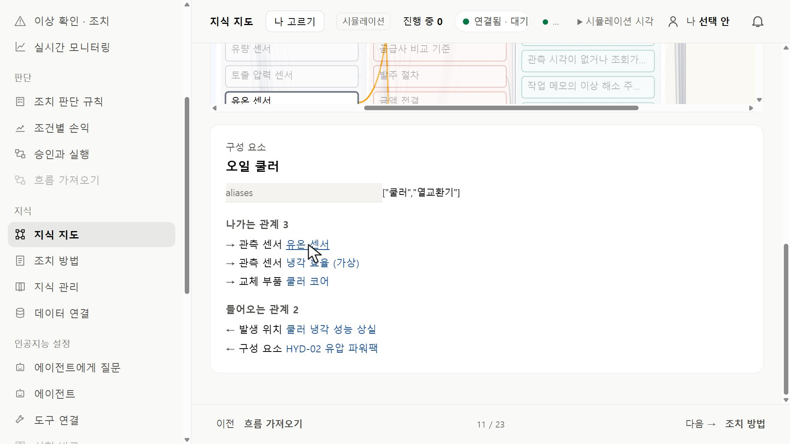

HYD · 실습 가이드설비 지식의 구조와 연결 관계 탐색하기
연결된 대상을 확인하고, 결과의 근거를 원자료와 대조합니다.
01 오일 쿨러 찾기
포털 시작 결과에 표시된 주소 또는 강사가 안내한 주소를 브라우저에서 엽니다. 왼쪽 메뉴에서 「지식」 → 「지식 지도」를 누르고 설비 칸에서 HYD-01을 선택하세요. 검색 칸에 오일 쿨러를 입력하고 강조된 오일 쿨러를 누르세요.

02 센서와 교체 부품 찾기
지도 아래 상세 칸에서 종류와 별칭을 읽으세요. 나가는 관계에서 유온 센서와 교체 부품을 찾아 오일 쿨러와 어떻게 이어지는지 살펴보세요.

03 부품 번호 대조하기
오일 쿨러의 나가는 관계에서 교체 부품인 쿨러 코어를 누르세요. 지도 아래 상세 칸의 품번을 앞 실습에서 확인한 P-CLR-CORE와 대조하세요. 들어오는 관계에서 오일 쿨러를 눌러 같은 연결을 거슬러 돌아오세요.
04 센서의 속성 읽기
유온 센서를 눌러 종류와 tag, unit을 확인하세요. 이 센서에서 나가는 「읽는 상태 변수」 관계를 찾으세요.

05 센서가 읽는 물리량 확인하기
「읽는 상태 변수」 옆의 유온을 누르세요. 센서의 태그와 물리량의 별칭에 TS1이 쓰입니다. 상세 칸에서 종류와 속성이 어떻게 달라졌는지 확인하세요.

06 식별자로 다시 찾기
지도 검색 칸에 sen:ts1을 입력하고 강조된 유온 센서를 누르세요. 이번에는 sv:ts1을 입력하고 강조된 유온을 누르세요. 앞서 관계를 따라 찾은 두 대상 중 어느 쪽이 센서이고 어느 쪽에 한계가 표시되나요?
07 예제 그래프와 비교하기
검색 칸을 비우고 설비를 HYD-02로 바꾼 뒤 오일 쿨러를 다시 선택하세요. 들어오는 설비와 나가는 센서를 HYD-01의 경로와 비교하세요. 검색 칸에 같은 센서 식별자 sen:ts1을 넣어 보세요. 두 설비에서 같은 식별자로 찾은 센서와 앞서 Cypher 예제에 들어 있던 설비를 구별해 보세요.
